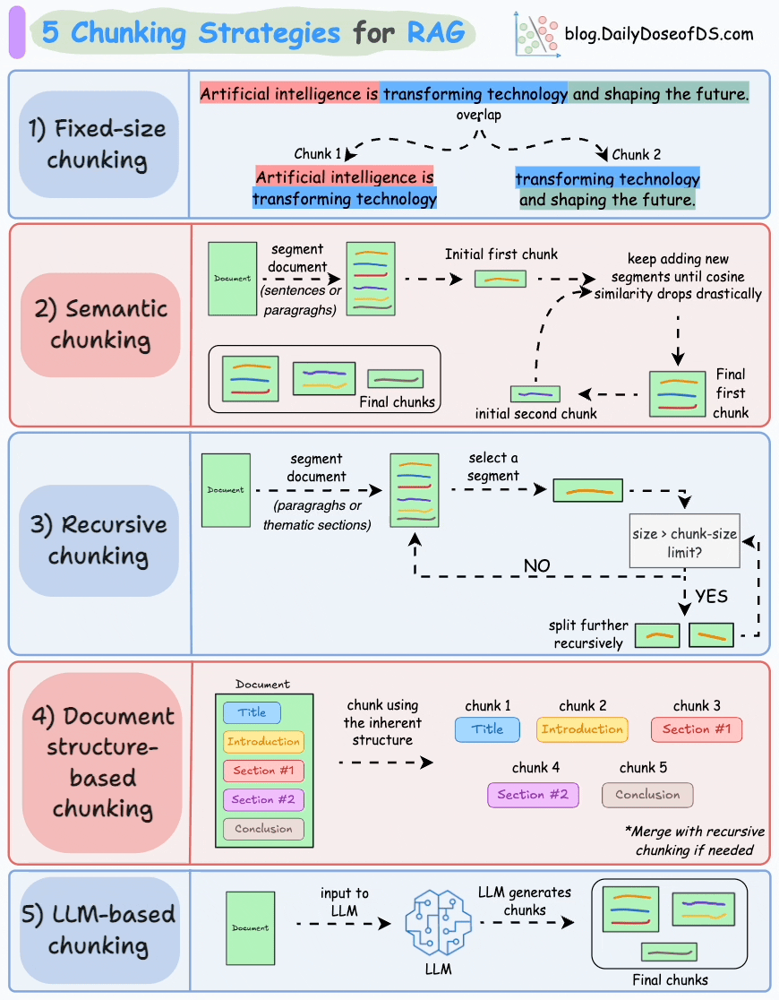

Building a basic Retrieval-Augmented Generation (RAG) app takes 10 lines of LangChain code. You load a PDF, split it into 1000-character chunks, shove it into FAISS, and query OpenAI. It looks like magic in a demo.
But when you push it to production, it fails. The LLM hallucinates, misses obvious answers, and provides incomplete context. Why? Because RAG is not an LLM problem; it is an Information Retrieval problem. Here is how to fix the most common pipeline failures using advanced chunking and hybrid search.
The standard tutorial approach is RecursiveCharacterTextSplitter(chunk_size=1000, chunk_overlap=100). This is equivalent to taking a pair of scissors and blindly cutting a book into exact 1000-character rectangles, regardless of where the sentences end.
If your scissor cut happens to slice right through the middle of a crucial paragraph, the semantic meaning is destroyed. The embedding model generates a vector for garbage text, and the search fails.
Instead of splitting by character count, we should split by meaning. Semantic chunking calculates the cosine distance between sentences. If the distance spikes, it means the topic has changed, and that is where we make our cut.
from langchain_experimental.text_splitter import SemanticChunker
from langchain_openai.embeddings import OpenAIEmbeddings
# Initialize the embedding model to measure sentence similarity
embeddings = OpenAIEmbeddings()
# Split only when the semantic meaning shifts significantly
text_splitter = SemanticChunker(
embeddings,
breakpoint_threshold_type="percentile",
breakpoint_threshold_amount=95
)
docs = text_splitter.create_documents([raw_text])

Vector databases are incredible at understanding concept. If you search for "dogs," dense vectors will successfully retrieve documents about "canines" and "puppies."
However, dense vectors are notoriously bad at exact keyword matching. If a user searches for a specific part number (e.g., "SKU-9942-X") or an obscure acronym, the semantic embedding might blur the exact characters, and the vector search will fail to retrieve the correct document.
To get the best of both worlds, we use Hybrid Search. We run a Dense Search (Embeddings/FAISS) to capture semantic meaning, AND a Sparse Search (BM25/TF-IDF) to capture exact keyword matches. We then fuse the results using a weighting parameter, $\alpha$.
Here is how you implement an Ensemble Retriever in LangChain:
from langchain.retrievers import EnsembleRetriever
from langchain_community.retrievers import BM25Retriever
from langchain_community.vectorstores import FAISS
# 1. Sparse Retriever (Exact Keyword Match)
bm25_retriever = BM25Retriever.from_documents(docs)
bm25_retriever.k = 5
# 2. Dense Retriever (Semantic Concept Match)
faiss_vectorstore = FAISS.from_documents(docs, embeddings)
faiss_retriever = faiss_vectorstore.as_retriever(search_kwargs={"k": 5})
# 3. Combine them! Weight BM25 at 30% and Vectors at 70%
ensemble_retriever = EnsembleRetriever(
retrievers=[bm25_retriever, faiss_retriever],
weights=[0.3, 0.7]
)
So, you've used Hybrid Search to retrieve the top 10 most relevant chunks. You stuff them all into the LLM prompt. Suddenly, the LLM hallucinates.
Research shows that LLMs suffer from the "Lost in the Middle" phenomenon. They pay strong attention to the very first chunk and the very last chunk in the prompt, but completely ignore the context sandwiched in the middle.
An LLM is only as smart as the context you feed it. By upgrading from naive chunking to semantic chunking, implementing Hybrid Search, and adding a Re-Ranker, you transition from building a brittle prototype to a robust, production-grade search engine.